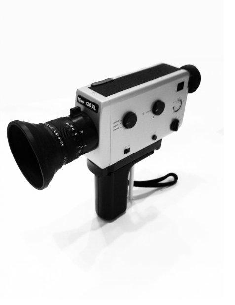
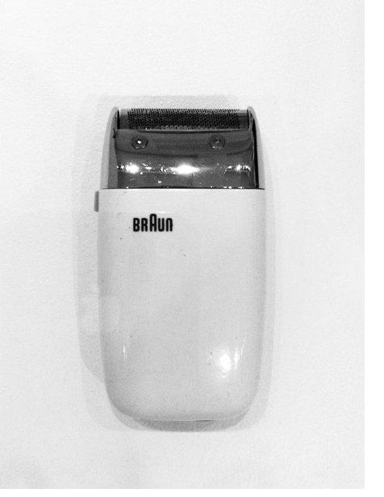
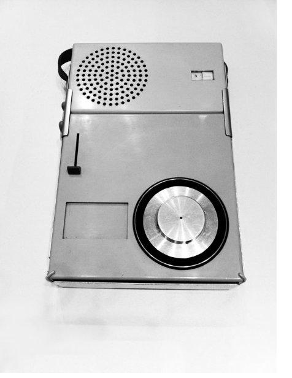
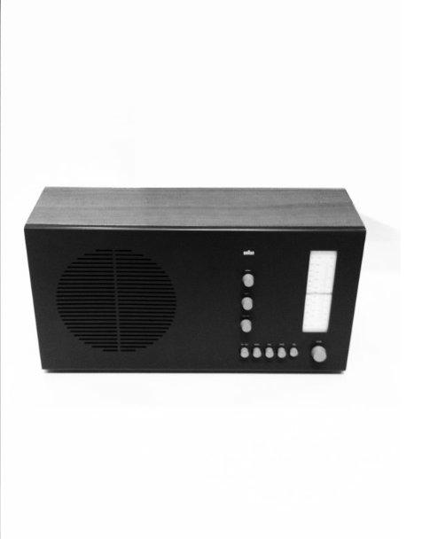
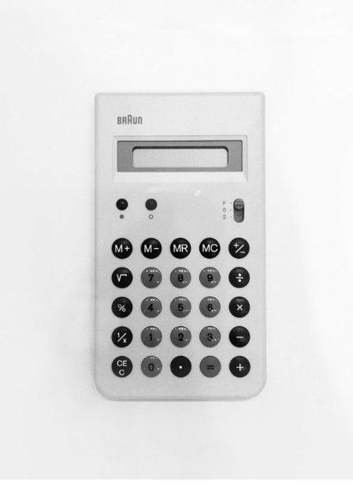
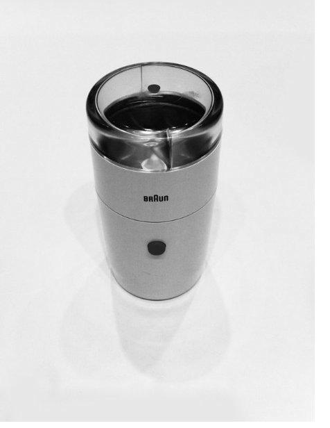
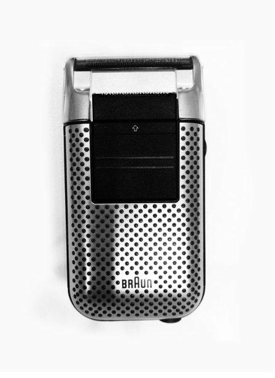
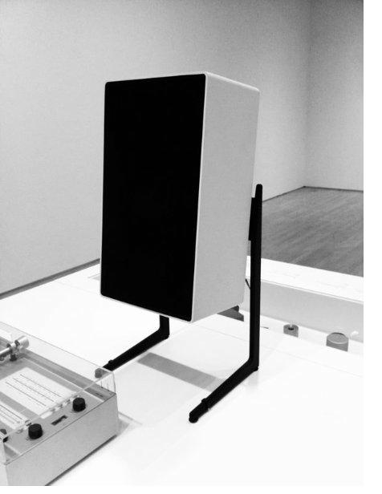
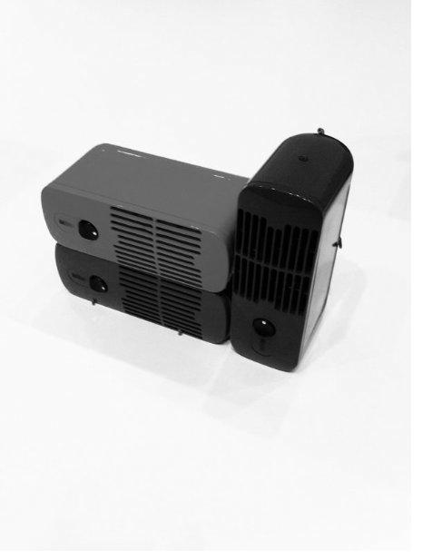
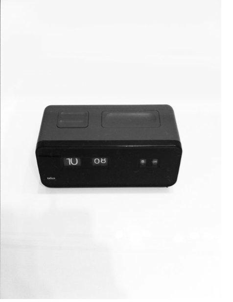

Los 10 principios del buen diseño
A lo largo de su carrera en Braun, Dieter Rams se preguntó si su trabajo era buen diseño. La respuesta fue estos diez principios. Hacé clic en cada imagen para leer el principio.
1

2

3

4

5

6

7

8

9

10

1
Es innovador
Es improbable agotar las posibilidades a la hora de innovar en el diseño debido a las constantes oportunidades que brinda el acelerado desarrollo tecnológico.